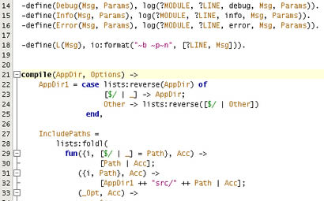
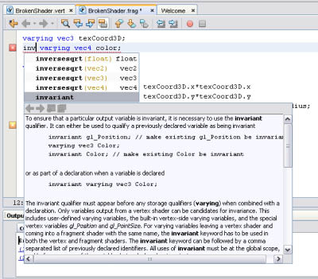
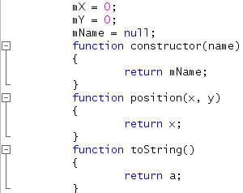
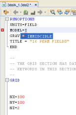
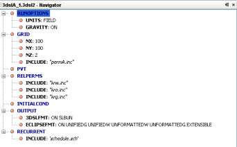
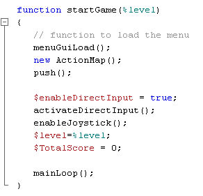
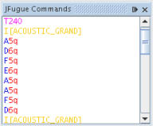

In the previous issue of the NetBeans Magazine, we highlighted a new and simplified approach to providing syntax highlighting, code completion, and other language-support features for programming languages. Instead of a multi-file Java-based approach using complex NetBeans APIs, we have a “new way” known as Schliemann. The idea behind it is to have a simple set of declarations in a single file, written in the form of regular expressions that describe the language tokens and grammar, together with their assignment to features in the IDE. Using these declarations, the IDE is then able to do the lexing and parsing for you, so there’s no need to provide such functionality yourself.
But how viable is this approach? Can it be used in real-life scenarios? Or is it just a fuzzy story without real usage in the workplace? In this article, we investigate a number of actual Schliemann-based implementations by NetBeans developers around the world.
At the time these implementations were started, the day was still young for the Schliemann framework, which was created for NetBeans 6.0. Despite that, several language developers who liked living on the edge had already started working with milestones and daily builds, writing editors for their favorite languages even before the framework on which they were basing their project was actually complete.
There are dangers in this, of course, but Schliemann has been stable enough to allow it, judging by the advanced results some of these implementations already provide. Each implementation is briefly discussed below, in the context of the developer who implemented it, and accompanied by some screenshots to give you an impression of the achievements thus far.
Erlang Language Support, by Caoyuan Deng
Erlang is a Functional Programming language with many dynamic features, such as being dynamically typed, with hot code swapping. “Erlang is ideal for soft real-time, heavy concurrent-load network applications,” says Caoyuan Deng, who is adding Erlang support to NetBeans. In Figure 1 you can see a segment of the editor that Caoyuan has created, showing syntax coloring and code folding.

Figure 1. Editing Erlang in NetBeans
When asked about the usability of the framework, Caoyuan says that, “with Schliemann you define a grammar file for a new language and you not only get features like syntax highlighting, indentation and code-folding, but also a visual incremental AST tree. This is helpful for writing IDE support for new languages. When you’re typing code, Schliemann parses the syntax incrementally in real-time, and you know immediately a lot of context information about the code, such as whether there is a variable in the current function’s scope.”
OpenGL Shading Language Support, by Michael Bien
OpenGL Shading Language (GLSL) is a language for graphical effects, such as lighting, fog, water, reflections, and refraction. It defines how an element is rendered in an OpenGL scene. Michael Bien created an editor for this language as part of his recently released NetBeans OpenGL Pack (see it at work in Figure 2).

Figure 2. GLSL support
“I am currently working on a Schliemann-based language validator for GLSL in combination with the NetBeans Lexer API, for an alternative to validation via compilation,” says Michael. “This is an important feature because GLSL shader programs are compiled by the VGA driver, and this can lead to different results on different hardware (or even driver versions).”
About his experience with Schliemann, he says that the declarative language the framework supports is very intuitive and provides access to most of the features you would expect from an IDE’s editor, without limiting the developer. He also highlights that you can call Java code from inside the Schliemann definition file.
D and MiniD Language Support, by Björn Lietz-Spendig
Giving his reasons for creating editor support for D and the MiniD scripting language, Björn says: “I don’t like C++, especially its preprocessor and template language. But, despite being a database developer who is used to working with RAD tools, I have a need for low-level programming. And now we have a stable D 1.x, including a module system, single inheritance, interfaces, garbage collector, design by contract, class invariants, in addition to templates as a natural part of the language.” Figure 3 shows the results so far for a simple MiniD code fragment.

Figure 3. MiniD programming in action
Commenting on the future of his editor support, Björn says: “The D implementation could open new horizons to NetBeans developers. Can you imagine being able to use a C++ class directly from Java and vice versa? With the D language plugin you can call D classes (via TioLink) and D can call Java classes. You have the power to create platform-independent eye-candy applications based on the NetBeans Platform, while having seamless integration with D”.
3DSL Support, by Max Calderoni & Marco Thiele
“We are currently developing a plugin supporting an internal format for a file that in our industry (oil) is currently edited by hand,” says Max Calderoni. “It’s the input file for a numeric simulator, not a programming language, and is called 3DSL. The simulator is used for oil reservoir analysis”. Such input files, the authors continue, are difficult to edit even for advanced users, “so it would be a blessing to have code folding, code completion, syntax highlighting and inline documentation for 3DSL files”. And they are well on that track using Schliemann (see Figure 4).
 
Figure 4. Support for 3DSL in complex, structured input files
TorqueScript Support, by Mohamed el Shami
TorqueScript is the scripting language of the Torque Game Engine and the Torque Game Builder (TGB), by GarageGames. TorqueScript has a C++-like syntax and includes features like Datablocks, Objects, and Namespaces. “What I’ve done so far with TorqueScript is only a start,” says Mohamed. “Since I’ve been learning along the way, I’m firstly working to complete the grammar rules. Then I’d like to add support to run ning the game from within the editor.” Figure 5 shows an example with TorqueScript.

Figure 5. TorqueScipt editing, with syntax coloring and code folding support
“I’d also like to add a project template for a new TGB game project which creates the game project structure,” says Mohamed. “Later, the plan is to include advanced features like debugging, refactoring, and a dynamically populated auto-complete list from the game engine APIs.”
JFugue Support, by the author
JFugue notation provides the music strings that let you specify notes, chords and instruments when you use the JFugue API for music programming. The notation is simple, but syntax coloring is always useful. In the example shown in Figure 6, the formatting is applied to a JEditorPane. This is simple to do, by assigning the MIME type as the value of the ContentType property. As a result, the notes and their duration can be distinguished from each other, and from the instrument selection (shown in yellow).

Figure 6. Syntax-colored JFugue notation
Conclusions
Despite its youth, the Schliemann framework is proving extremely useful in a number of varying scenarios. It is easy to use and the results are surprisingly effective. Why not take it for a spin?
Links |
Schliemann Wiki Generic Languages Framework (Project Schliemann) |
 |
Geertjan Wielenga is a technical writer for the NetBeans project. He mainly focuses on the NetBeans Platform and is a co-author of the book “Rich-Client Programming: Plugging into the NetBeans Platform”. He lives in Prague, in the Czech Republic. |